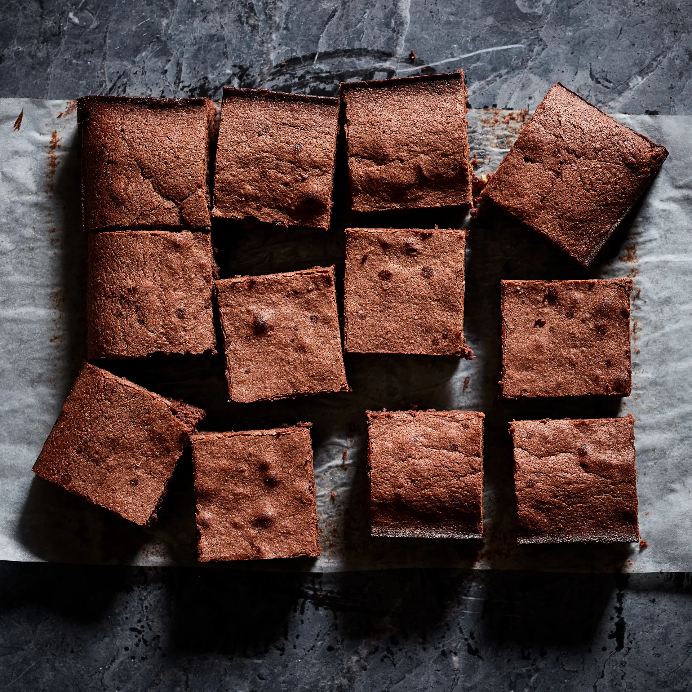

The Best Chocolate Brownies Recipe
A super easy brownie recipe for a squidgy chocolate
bake. Follow our foolproof recipe to help you
get a perfect traybake every time.
What you will need:
- 185g unsalted butter
- 185g dark chocolate
- 85g plain flour
- 40g cocoa powder
- 50g white chocolate
- 50g milk chocolate
- 3 large eggs
- 275g golden caster sugar
Method
- Cut 185g unsalted butter into small cubes and tip into a
medium bowl. Break 185g dark chocolate into small
pieces and drop into the bowl.
- Fill a small saucepan about a quarter full with hot water,
then sit the bowl on top so it rests on the rim of the
pan, not touching the water. Put over a low heat until
the butter and chocolate have melted, stirring
occasionally to mix them.
- Remove the bowl from the pan. Alternatively, cover the
bowl loosely with cling film and put in the microwave for
2 minutes on High. Leave the melted mixture to cool to
room temperature.
- While you wait for the chocolate to cool, position a shelf
in the middle of your oven and turn the oven on to
180C/160C fan/gas 4.
- Using a shallow 20cm square tin, cut out a square of
kitchen foil (or non-stick baking parchment) to line the
base. Tip 85g plain flour and 40g cocoa powder into a
sieve held over a medium bowl. Tap and shake the sieve
so they run through together and you get rid of any
lumps.
- Chop 50g white chocolate and 50g milk chocolate into
chunks on a board.
- Break 3 large eggs into a large bowl and tip in 275g
golden caster sugar. With an electric mixer on maximum
speed, whisk the eggs and sugar. They will look thick
and creamy, like a milk shake. This can take 3-8
minutes, depending on how powerful your mixer is.
You’ll know it’s ready when the mixture becomes really
pale and about double its original volume. Another
check is to turn off the mixer, lift out the beaters and
wiggle them from side to side. If the mixture that runs off
the beaters leaves a trail on the surface of the
mixture in the bowl for a second or two, you’re there.
- Pour the cooled chocolate mixture over the eggy mousse,
then gently fold together with a rubber spatula.
Plunge the spatula in at one side, take it underneath
and bring it up the opposite side and in again at the
middle. Continue going under and over in a figure of
eight, moving the bowl round after each folding so you
can get at it from all sides, until the two mixtures are
one and the colour is a mottled dark brown. The idea is
to marry them without knocking out the air, so be as
gentle and slow as you like.
- Hold the sieve over the bowl of eggy chocolate mixture
and resift the cocoa and flour mixture, shaking the sieve
from side to side, to cover the top evenly.
- Gently fold in this powder using the same figure of eight
action as before. The mixture will look dry and dusty at
first, and a bit unpromising, but if you keep going very
gently and patiently, it will end up looking gungy and
fudgy. Stop just before you feel you should, as you don’t
want to overdo this mixing.
- Finally, stir in the white and milk chocolate chunks until
they’re dotted throughout.
- Pour the mixture into the prepared tin, scraping every
bit out of the bowl with the spatula. Gently ease the
mixture into the corners of the tin and paddle the
spatula from side to side across the top to level it.
- Put in the oven and set your timer for 25 mins. When
the buzzer goes, open the oven, pull the shelf out a bit
and gently shake the tin. If the brownie wobbles in the
middle, it’s not quite done, so slide it back in and bake
for another 5 minutes until the top has a shiny, papery
crust and the sides are just beginning to come away
from the tin. Take out of the oven.
- Leave the whole thing in the tin until completely cold,
then, if you’re using the brownie tin, lift up the
protruding rim slightly and slide the uncut brownie out
on its base. If you’re using a normal tin, lift out the
brownie with the foil (or parchment). Cut into quarters,
then cut each quarter into four squares and finally into
triangles.
- They’ll keep in an airtight container for a good two
weeks and in the freezer for up to a month.
